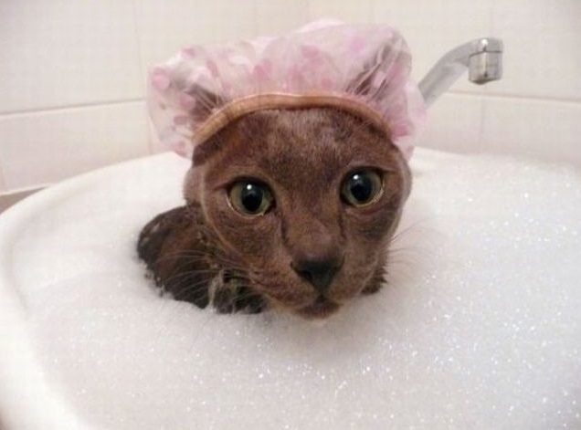

¿Puedo bañar a mi gato?
Los gatos suelen ser bastante reacios a mojarse, ellos son muy limpios, se acicalan a diario y mantienen su pelaje en buen estado pero en ocasiones especiales deberás bañar a tu gato. Ya sea por grasitud, porque son alérgicos, porque se han manchado con algo o simplemente por acumulación de polvo y suciedad.
La mejor manera de habituar un gato al agua es hacerlo desde muy pequeño. Cualquier experiencia nueva puede ser entretenida para un gatito de pocos meses, de modo que si le das su primer baño en forma de juego, el éxito estará asegurado. Puedes incluir algún juguete en la bañera o hablarle y mimarlo mientras lo aseas.
¿Cómo bañar a un gato?
Antes de comenzar, prepara los accesorios que vas a necesitar: un champú suave apropiado a su edad, un acondicionador si el gatito tiene pelo largo, juguetes que puedan mojarse, una toalla, un secador de cabello si hace frío y recipiente pequeño para poder retirar el champú de su cuerpo sin molestar al gatito. No olvides preparar una sabrosa golosina como premio para después. Por último, no olvides que el ambiente debe ser cálido.
¿A qué edad se puede bañar a un gato?
Lo ideal es empezar a bañar a un gato cuando es cachorro, en su etapa de socialización, para que se acostumbre poco a poco a esta actividad. El primer baño se puede realizar entre los 2 y 3 meses de edad. De esta manera, el gato aprende a bañarse y se acostumbra al agua y al jabón, llegando a disfrutar del momento del baño.
- Lo ideal es utilizar el lavabo donde el gato pueda pisar y sentirse seguro.
- Te conviene sostenerlo poniendo una mano debajo de su cuerpo y mojarlo para no tener que ubicarlo debajo del grifo a la fuerza. Un truco que resulta muy útil con los gatitos cuando se ponen nerviosos es levantarlos con suavidad tomando la piel detrás del cuello, tal como los llevaría su madre; esto suele calmarlos inmediatamente. Esta técnica puede dar el mismo resultado con algunos adultos, pero prueba con cuidado para que no te arañe.
- Moja todo su cuerpo, cuidando de no meter agua en sus oídos, y aplica el champú frotando con tu mano.
- Lava especialmente sus patitas y la región perianal, estas zonas suelen estar más sucias, recuerda que puedes utilizar toallitas húmedas de forma más frecuente sin necesidad de bañarlo.
- Debes limpiarlo con movimientos suaves, mantenlo siempre sobre sus patas, no lo pongas en posiciones antinaturales que le puedan molestar o asustar. Cógelo sin apretarlo. Una vez que esté bien limpio aclara con agua tibia, pasando tu mano en dirección del pelo para eliminar todo resto de champú
- Una vez que hayas acabado, envuélvelo en una toalla y seca su cuerpo, pero ¡nada de frotarlo vigorosamente! Recuerda que todo debe resultarle agradable para que el próximo baño no se convierta en una batalla campal.
- Para que el secador de pelo sea lo menos traumático posible, pon al gatito con la toalla sobre tu regazo y échale el aire tibio desde unos 30 cm, para que no se asuste. Ve levantando sus pelitos para que se seque por completo hasta la piel. Puedes hacer esto con tus dedos o con un peine. Si tu gato tiene pelo largo te conviene usar un peine o cepillo diseñado para gatos para dejar su pelaje bien bonito y que así se acostumbre al cepillado también.
Todos estos pasos se aplican también para un gato adulto. La manera de sujetarlo puede ser un poco más complicada si él no está acostumbrado al baño. Si se inquieta mucho tendrás que tomarlo con firmeza de la parte de atrás del cuello y presionar con delicadeza hacia abajo mientras lo calmas con caricias y hablándole.
Acaba el baño lo más pronto que puedas para no prolongar su malestar. Mantén la calma, pues es muy importante para que puedas controlar al gato sin salir lastimado.
Si el baño resulta demasiado estresante, siempre puedes recurrir a un champú en espuma, una loción limpiadora, un talco de limpieza, perfumes o toallitas higiénicas para evitar pasar por el agua y que aún así tu minino luzca limpio y perfumado.